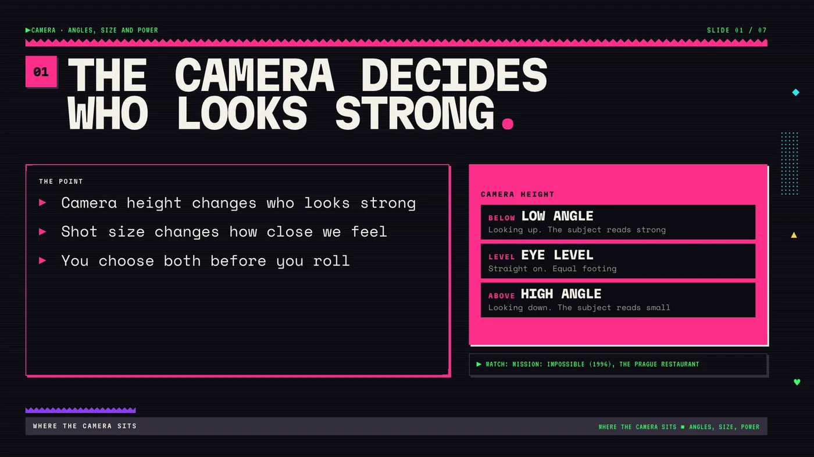
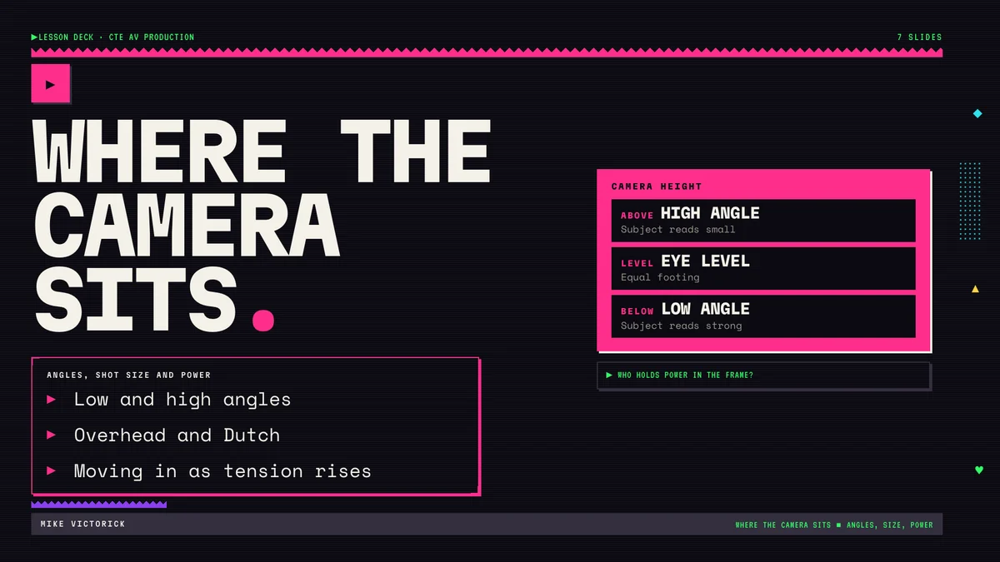

Slide 01CA-001.01

The camera decides who looks strong.
Instructional design · Presentation design
A seven-slide lesson that teaches high school film students to choose camera angle and shot size on purpose, so the audience can tell who holds power in a scene.

Film students learn the names of camera angles fast. Picking one on purpose comes much later. Most first shoots happen at eye level because that is where the tripod ends up.
High school students in a CTE AV production or film course. Some have shot on their phones for years and some have never framed a shot.
I wrote the brief, approved the outline, chose the assessment and own the final copy. The slides were built with an AI-assisted pipeline I set up, with an automated QA check on every render.
Measurable outcome
By the end of the unit, students choose camera height and shot size on purpose so the audience can tell who holds power in a scene. They show it by shooting one short exchange twice with the power flipped.
The lesson opens on the Prague restaurant scene from Mission: Impossible (1996). The lines stay the same while the camera drops lower and tilts as Ethan works out that Kittredge is lying. Students say what changed before they learn the terms for it.
Low angle, high angle, overhead and Dutch, shot size, then how size and angle build across a scene, then three questions to ask before every setup.
Citizen Kane, The Ring, Casino, The Master, 12 Years a Slave and Westworld, pulled from a NotebookLM notebook built on StudioBinder's breakdowns and tagged in the speaker notes.
In Citizen Kane the extreme low angle on Kane after the election plays as defeat. The angle sets size. The scene decides what that size means.
Students below level get a shot list with sizes filled in and choose only the angles. Students ahead add one Dutch angle and justify it in writing. Everyone ends with an exit ticket: one shot, its size, its angle and the reason.
Pairs write a six-line exchange and shoot it twice. In version A one character holds the power. In version B it flips. Same lines, same actors. Only the angles and shot sizes change.
The class watches both versions, names who holds power in each and points to the shot that shows it. If they can't tell, the pair reshoots one setup.
Shot list columns: size · angle · reason_
THE 90s design system
Near-black ground, monospace type, hard offset shadows, and an accent color that changes slide to slide. Every slide runs the same grid: title row, bullet panel on the left, diagram card on the right, source line, footer.
Each diagram reads without color. Camera heights are labeled BELOW, LEVEL and ABOVE, and the Dutch angle box is drawn tilted. Every slide image carries alt text, and the PPTX has full speaker notes on all seven slides.
Every slide passed the QA script for layout, type scale, focal point, accent use and contrast. Four slides failed the first pass because single words were wrapping onto their own line. I rewrote those bullets shorter and they passed.
Not taught yet. This is a portfolio build. The flipped-power shoot is the test: if the class can name who holds power from the frames alone, the lesson worked.
An automated check catches things I miss at a glance, like one word stranded on its own line. Short bullets fixed it every time, and the slides read faster for it.